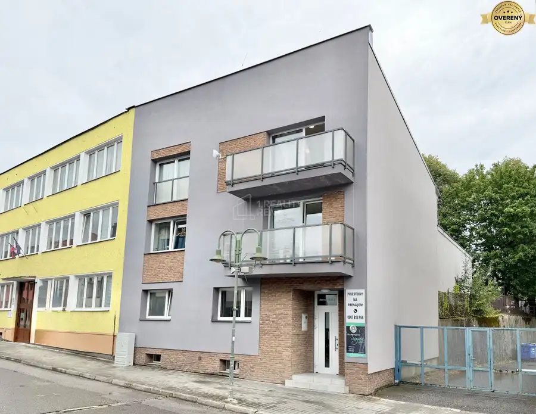
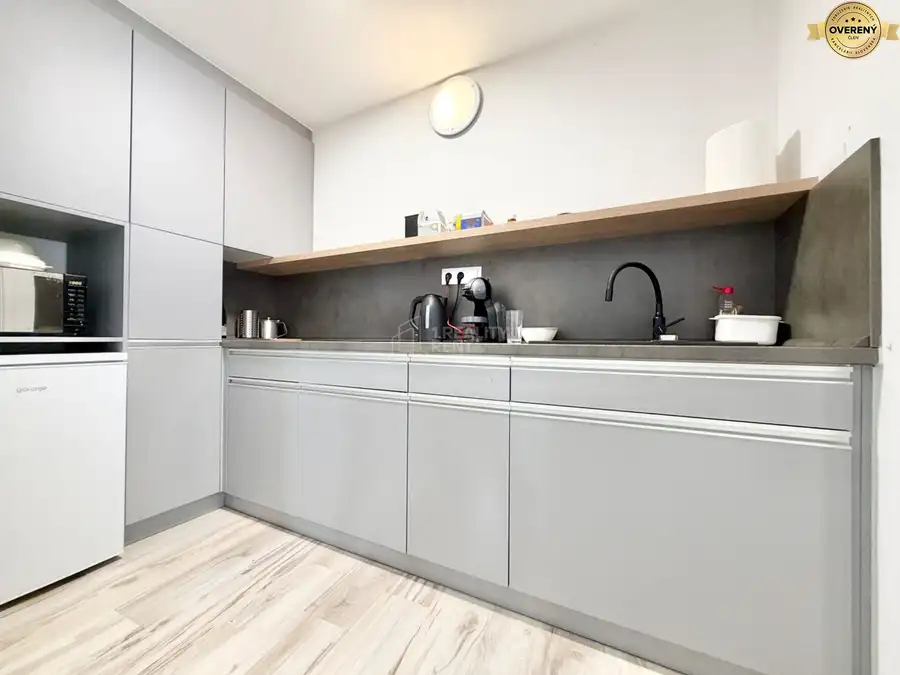
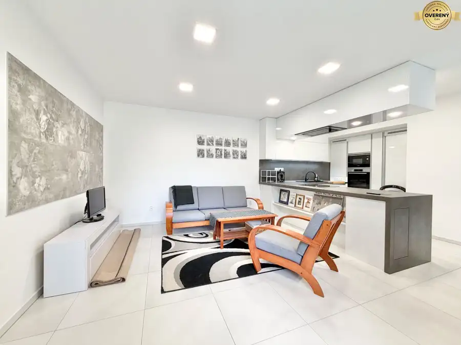
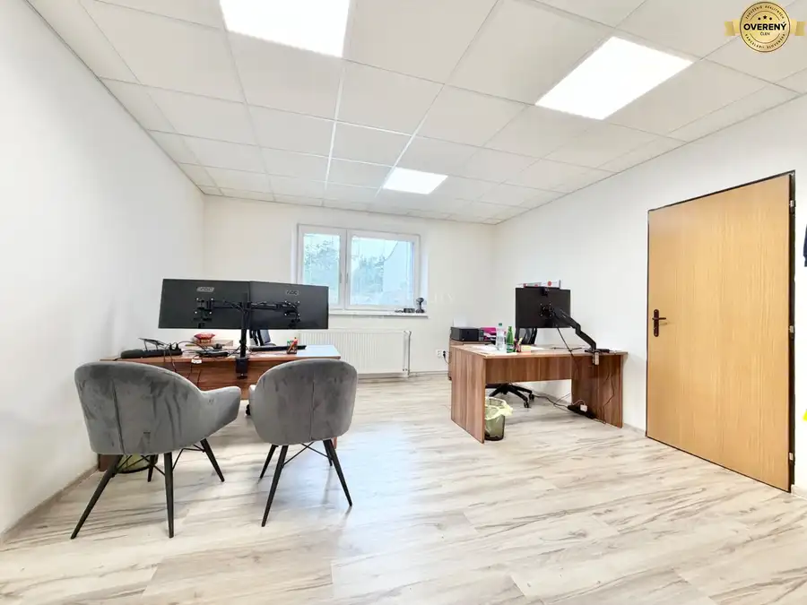
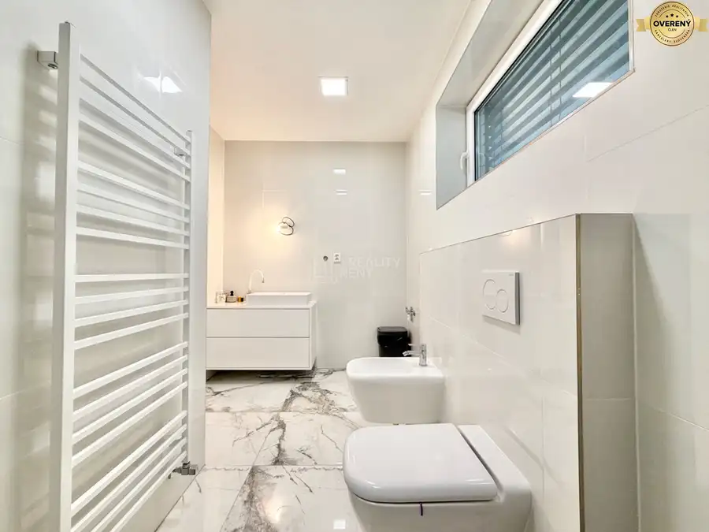
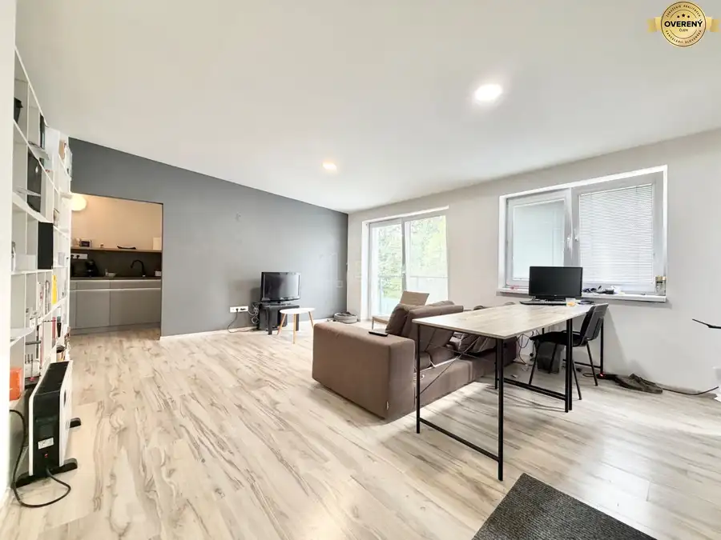

Predaj: Multifunkčný polyfunkčný dom 438 m² v priamom centre Čadce
Čadca







- Dispozícia10-izbový
- Plocha438 m²
- Poschodie0. z 4
- Stavúplne prerobený
- Vlastníctvoosobné
O nehnuteľnosti
Ponúkame na predaj výnimočnú investičnú príležitosť – kompletne zrekonštruovaný, veľký polyfunkčný dom v absolútnom centre mesta Čadca. Tento objekt spája luxusné bývanie, moderné kancelárske priestory a zabehnuté obchodné priestory pod jednou strechou. Vďaka novej prístavbe (kolaudovanej v roku 2022) a kompletnej obnove celej budovy nevyžaduje nehnuteľnosť žiadne ďalšie investície a je okamžite pripravená na generovanie stabilného príjmu z prenájmu alebo na kombináciu vlastného podnikania a bývania. Celková úžitková plocha: 438 m² (rozpustená do 4 podlaží, 3 nadzemné jeden suterén). Zastavaná plocha domu je 264 m² (vrátane príjemnej vonkajšej terasy). Objekt sa nachádza v mestskej zástavbe priamo v centre, pozemok je kompletne zastavaný (nehnuteľnosť nedisponuje klasickou záhradou, čo minimalizuje nároky na údržbu). Dom prešiel kompletnou rekonštrukciou + nová prístavba (kolaudácia r. 2022). Všetky byty, kancelárie aj obchodné priestory sa predávajú kompletne zariadené nábytkom. Dispozičné riešenie podlaží - nehnuteľnosť je dômyselne rozdelená na 4 podlažia (1 podzemné a 3 nadzemné), pričom každá jednotka má zabezpečené maximálne súkromie a samostatné zázemie. 1. Podzemné podlažie (Suterén) – Technicko-prevádzkové zázemie - priestranný skladový priestor, moderná kotolňa, technická miestnosť zabezpečujúca bezproblémový chod celej budovy. 1. až 3. Nadzemné podlažie – multifunkčné využitie, na týchto podlažiach sa nachádzajú samostatné celky rozdelené na obchodné priestory (ideálne pre predajňu, služby), kancelárske priestory (moderný open-office alebo samostatné kancelárie pre firmy), bytové jednotky (komfortné mestské bývanie alebo apartmány na dlhodobý/krátkodobý prenájom). Kľúčovým benefitom je, že každý jeden priestor (všetky byty, kancelárie aj obchody) disponujú vlastným kompletným sociálnym zariadením (WC, sprcha, umývadlo) a vlastnou kuchynkou.
Najväčšie výhody tejto nehnuteľnosti TOP lokalita, priame centrum Čadce s vysokým pohybom ľudí a kompletnou občianskou vybavenosťou na dosah ruky. Okamžitý výnos, všetky priestory sú kompletne zariadené nábytkom – stačí nasťahovať nájomníkov alebo začať podnikať. Technický stav bez starostí - nová prístavba z roku 2022 a precízna rekonštrukcia zaručujú nízke prevádzkové náklady a dlhé roky bez investícií. Maximálna flexibilita - možnosť variability využitia jednotlivých poschodí podľa potrieb nového majiteľa. Komfort pre nájomcov - žiadne zdieľané toalety či kuchynky – každá prevádzka a byt funguje úplne autonómne. Budova je vo vlastníctve súkromnej osoby, nepodlieha režimu DPH.
Ak hľadáte bezpečné uloženie kapitálu s vysokou pridanou hodnotou a stabilnou návratnosťou v regióne Kysúc, táto budova je ideálnou voľbou.
Pre viac informácií, detailné pôdorysy alebo dohodnutie obhliadky ma neváhajte kontaktovať na č. .
Parametre
- Rozloha pozemku
- 283 m²
- Zastavaná plocha
- 264 m²
- Celková rozloha
- 283 m²
- Úžitková plocha
- 438 m²
- Poschodie
- prízemie
- Počet poschodí
- 4
- Počet izieb
- 10
- Vlastníctvo
- osobné
- Stav
- úplne prerobený
- Status
- aktívne
- Odvoz odpadu
- áno
- Voda
- verejný vodovod
- El. napätie
- 230/400V
- Plyn
- áno
- Kanalizácia
- áno
- Internet
- wifi
- Kúpeľňa
- áno
- Vykurovanie
- spoločné – vlastná kotolňa
- Balkón
- áno
- Pivnica
- áno
- Garáž
- nie
- Parkovanie
- vlastné vyhradené
- Inžinierske siete
- áno
- Postavené z
- Zmiešané
- Zariadenie
- zariadený
- Zateplený objekt
- áno
- Strecha
- po rekonštrukcii
- Energetický certifikát
- nie
- Bezbariérový prístup
- nie
- Okná
- plastové
- Terén
- rovina
- Prístupová cesta
- asfaltová cesta
- Pripravené na výstavbu
- vydané stavebné povolenie
- Dátum zverejnenia
- 2026-08-26
Kde to je
Mohlo by Vás zaujímať
 PozemokNové
342 722 €Predaj: Stavebné pozemky 5909m2 v Nesluši vhodné pre developera (SŠ)
Nesluša
5909 m²
PozemokNové
342 722 €Predaj: Stavebné pozemky 5909m2 v Nesluši vhodné pre developera (SŠ)
Nesluša
5909 m²
 PozemokNové
166 634 €Predaj: Veľkorysý pozemok s výmerou 2873 m² a úžasným súkromím (SŠ)
Nesluša
2873 m²
PozemokNové
166 634 €Predaj: Veľkorysý pozemok s výmerou 2873 m² a úžasným súkromím (SŠ)
Nesluša
2873 m²
 PozemokNové
135 000 €Predaj: Stavebný pozemok 680m2 v Kysuckom Novom Meste (SŠ)
Kysucké Nové Mesto
680 m²
PozemokNové
135 000 €Predaj: Stavebný pozemok 680m2 v Kysuckom Novom Meste (SŠ)
Kysucké Nové Mesto
680 m²